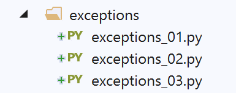

5. Les exceptions
Nous nous intéressons maintenant aux exceptions.

5.1. script [exceptions_01]
Le premier script illustre la nécessité de gérer les exceptions.
| # on provoque volontairement une erreur
x = 4 / 0
|
On provoque volontairement une erreur pour voir ce qui se passe (exceptions-01.py) :
| C:\Data\st-2020\dev\python\cours-2020\python3-flask-2020\venv\Scripts\python.exe C:/Data/st-2020/dev/python/cours-2020/python3-flask-2020/exceptions/exceptions_01.py
Traceback (most recent call last):
File "C:/Data/st-2020/dev/python/cours-2020/python3-flask-2020/exceptions/exceptions_01.py", line 2, in <module>
x = 4 / 0
ZeroDivisionError: division by zero
Process finished with exit code 1
|
La ligne 4 nous donne :
- le type de l'exception : ZeroDivisionError ;
- le message d'erreur associé : division by zero. Il est en anglais. C'est quelque chose qu'on peut vouloir changer.
Une règle essentielle est qu'on doit tout faire pour éviter les exceptions produites par l'interpréteur Python. Il nous faut gérer les erreurs nous-mêmes.
La syntaxe d'une gestion d'exceptions est la suivante :
| try:
actions susceptibles de lancer une exception
except (Ex1, Ex2…) as ex:
actions de gestion de l'exception [ex]
except (Ex11, Ex12…) as ex:
actions de gestion de l'exception [ex]
finally:
actions toujours exécutées qu'il y ait exception ou non
|
Dans le try, l'exécution des actions s'arrête dès qu'une exception (erreur) survient. Dans ce cas, l'exécution se poursuit avec les actions de l'une des clauses except :
- ligne 3 : si l'exception [ex] qui s'est produite est d'un type appartenant au tuple (Ex1, Ex2…) ou dérivé de l'un d'eux, alors les actions de la ligne 4 sont exécutées ;
- ligne 5 : si l'exception n'a pas été interceptée par la ligne 3, et qu'une autre clause [except] existe, alors le même processus se déroule. Etc… ;
- il peut y avoir autant de clauses [except] que nécessaires pour gérer les différents types d'exception qui peuvent de produire dans le [try] ;
- si l'exception n'a été traitée par aucune des clauses [except] alors elle remontera au code appelant. Si celui-ci est lui-même dans une structure try / except, l'exception est de nouveau gérée sinon elle continue à remonter la chaîne des méthodes appelées. En dernier ressort, elle arrive à l'interpréteur Python. Celui-ci arrête alors le programme excécuté et affiche un message d'erreur du type montré dans l'exemple précédent. La règle est donc que le programme principal doit arrêter toutes les exceptions qui peuvent remonter des méthodes appelées ;
- ligne 7 : la clause [finally] est toujours exécutée qu'il y ait eu exception (suite du except) ou pas (suite du try). Ceci est vrai même si une exception a eu lieu et qu'elle n'a pas été interceptée. Dans ce cas, la clause [finally] sera exécutée avant que l'exception ne remonte au code appelant ;
Une exception transporte avec elle des informations sur l'erreur qui s'est produite. On peut les obtenir avec la syntaxe suivante :
| except MyException as exception:
|
[exception] est l'exception qui s'est produite. [exception.args] représente le tuple des paramètres de l'exception.
Pour lancer une exception, on utilise la syntaxe
| raise MyException(param1, param2…)
|
où le plus souvent MyException est une classe dérivée de la classe BaseException. Les paramètres passés au constructeur de la classe seront disponibles à la clause except des structures d'interception des exceptions avec la syntaxe [ex.args] si [ex] est l'exception interceptée par la clause [except].
Ces concepts sont illustrés par le script suivant.
5.2. script [exceptions_02]
Le script suivant gère explicitement les erreurs :
| # gestion des exceptions
essai = 0
# on provoque une erreur et on la gère
x = 2
try:
x = 4 / 0
except ZeroDivisionError as erreur:
# erreur est l'exception interceptée
print(f"essai n° {essai} : {erreur}")
# la valeur de x n'a pas changé
print(f"x={x}")
# on recommence
essai += 1
try:
x = 4 / 0
except BaseException as erreur:
# on intercepte l'exception la plus générale
# erreur est l'exception interceptée
print(f"essai n° {essai} : {erreur}")
# on peut intercepter différents types d'exceptions
# l'exécution s'arrête sur le 1er [except] capable de traiter l'exception
essai += 1
try:
x = 4 / 0
except ValueError as erreur:
# cette exception ne se produit pas ici
print(f"essai n° {essai} : {erreur}")
except BaseException as erreur:
# on intercepte l'exception la plus générale
print(f"essai n° {essai} : (Exception) {erreur}")
except ZeroDivisionError as erreur:
# on intercepte un type précis
print(f"essai n° {essai} : (ZeroDivisionError) {erreur}")
# on recommence en changeant l'ordre
essai += 1
try:
x = 4 / 0
except ValueError as erreur:
# cette exception ne se produit pas ici
print(f"essai n° {essai} : {erreur}")
except ZeroDivisionError as erreur:
# on intercepte un type précis
print(f"essai n° {essai} : (ZeroDivisionError) {erreur}")
except BaseException as erreur:
# on intercepte l'exception la plus générale
print(f"essai n° {essai} : (Exception) {erreur}")
# une clause except sans arguments
essai += 1
try:
x = 4 / 0
except:
# on ne s'intéresse pas à la nature de l'exception
print(f"essai n° {essai} : il y a eu un problème")
# un autre type d'exception
essai += 1
try:
# x ne peut être converti en nombre entier
x = int("x")
except ValueError as erreur:
# erreur est l'exception interceptée
print(f"essai n° {essai} : {erreur}")
# une exception transporte des informations dans un tuple accessible au programme
essai += 1
try:
x = int("x")
except ValueError as erreur:
# erreur est l'exception interceptée
print(f"essai n° {essai} : {erreur}, paramètres={erreur.args}")
# on peut lancer des exceptions
essai += 1
try:
raise ValueError("param1", "param2", "param3")
except ValueError as erreur:
# erreur est l'exception interceptée
print(f"essai n° {essai} : {erreur}, paramètres={erreur.args}")
# on peut créer ses propres exceptions
# elles doivent dériver de la classe [BaseException]
class MyError(BaseException):
pass
# on lance l'exception MyError
essai += 1
try:
raise MyError("info1", "info2", "info3")
except MyError as erreur:
# erreur est l'exception interceptée
print(f"essai n° {essai} : {erreur}, paramètres={erreur.args}")
# on lance l'exception MyError avec un msg d'erreur
essai += 1
try:
raise MyError("mon msg d'erreur")
except MyError as erreur:
# erreur est l'exception interceptée
print(f"essai n° {essai} : {erreur.args[0]}")
# la clause finally est toujours exécutée
# qu'il y ait exception ou non
essai += 1
x = None
try:
x = 1
except:
# exception
print(f"essai n° {essai} : exception")
finally:
# exécuté dans tous les cas
print(f"essai n° {essai} : finally x={x}")
essai += 1
x = None
try:
x = 2 / 0
except:
# exception
print(f"essai n° {essai} : exception")
finally:
# exécuté dans tous les cas
print(f"essai n° {essai} : finally x={x}")
# on n'est pas obligés de mettre une clause [except]
essai += 1
try:
# on provoque une erreur
x = 4 / 0
finally:
# exécuté dans tous les cas
print(f"essai n° {essai} : finally x={x}")
|
Notes :
- lignes 4-12 : on gère une division par zéro ;
- ligne 8 : on intercepte l'exception exacte qui se produit et on l'affiche ;
- ligne 12 : à cause de l'exception qui s'est produite, x n'a pas reçu de valeur ligne 7 et n'a donc pas changé de valeur ;
- lignes 14-21 : on refait la même chose mais en interceptant une exception de plus haut niveau de type BaseException. Comme l'exception ZeroDivisionError dérive de la classe BaseException, la clause except l'arrêtera ;
- lignes 23-36 : on met plusieurs clauses except pour gérer plusieurs types d'exception. Une seule clause except sera exécutée ou aucune si l'exception ne vérifie aucune clause except ;
- lignes 38-50 : on refait la même chose en changeant l'ordre des clauses [except] pour montrer le rôle de celui-ci ;
- lignes 52-58 : la clause except peut n'avoir aucun argument. Dans ce cas, elle arrête toutes les exceptions ;
- lignes 60-67 : introduisent l'exception ValueError ;
- lignes 69-75 : on récupère les informations transportées par l'exception ;
- lignes 77-83 : introduisent la façon de lancer (raise) une exception ;
- lignes 86-106 : illustrent l'utilisation d'une classe d'exception propriétaire MyError. La classe MyError se contente de dériver la classe de base BaseException. Elle n'ajoute rien à sa classe de base. Mais maintenant, elle peut être nommée explicitement dans les clauses except ;
- lignes 108-130 : illustrent l'utilisation de la clause finally ;
- lignes 132-139 : ces lignes montrent que la clause [except] n’est pas obligatoire ;
Les résultats écran sont les suivants :
| C:\Data\st-2020\dev\python\cours-2020\python3-flask-2020\venv\Scripts\python.exe C:/Data/st-2020/dev/python/cours-2020/python3-flask-2020/exceptions/exceptions_02.py
Traceback (most recent call last):
File "C:/Data/st-2020/dev/python/cours-2020/python3-flask-2020/exceptions/exceptions_02.py", line 136, in <module>
x = 4 / 0
ZeroDivisionError: division by zero
essai n° 0 : division by zero
x=2
essai n° 1 : division by zero
essai n° 2 : (Exception) division by zero
essai n° 3 : (ZeroDivisionError) division by zero
essai n° 4 : il y a eu un problème
essai n° 5 : invalid literal for int() with base 10: 'x'
essai n° 6 : invalid literal for int() with base 10: 'x', paramètres=("invalid literal for int() with base 10: 'x'",)
essai n° 7 : ('param1', 'param2', 'param3'), paramètres=('param1', 'param2', 'param3')
essai n° 8 : ('info1', 'info2', 'info3'), paramètres=('info1', 'info2', 'info3')
essai n° 9 : mon msg d'erreur
essai n° 10 : finally x=1
essai n° 11 : exception
essai n° 11 : finally x=None
essai n° 12 : finally x=None
Process finished with exit code 1
|
5.3. script [exceptions_03]
Ce nouveau script illustre la remontée des exceptions dans la chaîne des fonctions appelantes :
| # une exception propriétaire
class MyError(BaseException):
pass
# trois fonctions
def f1(x: int) -> int:
# on ne gère pas les exceptions - elles remontent automatiquement
return f2(x)
def f2(y: int) -> int:
# on ne gère pas les exceptions - elles remontent automatiquement
return f3(y)
def f3(z: int) -> int:
if (z % 2) == 0:
# si z est pair, on lance une exception
raise MyError("exception dans f3")
else:
return 2 * z
# ---------- main
# les exceptions remontent la chaîne des méthodes appelées
# jusqu'à ce qu'une méthode l'intercepte. Ici ce sera main
try:
print(f1(4))
except MyError as erreur:
print(f"type : {type(erreur)}, arguments : {erreur.args}")
# trois autres fonctions qui enrichissent les exceptions qu'elle remonte
def f4(x: int) -> int:
try:
return f5(x)
except MyError as erreur:
# on enrichit l'exception puis on la relance
raise MyError("exception dans f4", erreur)
def f5(y: int) -> int:
try:
return f6(y)
except MyError as erreur:
# on enrichit l'exception puis on la relance
raise MyError("exception dans f5", erreur)
def f6(z: int) -> int:
if (z % 2) == 0:
# on lance une exception si z est pair
raise MyError("exception dans f6")
else:
return 2 * z
# ---------- main
try:
print(f4(4))
except MyError as erreur:
# affichage de l'exception
print(f"type : {type(erreur)}, arguments : {erreur.args}")
# on peut remonter la pile des exceptions
err = erreur
# on affiche le msg d'erreur
print(err.args[0])
# une exception est-elle encapsulée ?
while len(err.args) == 2 and isinstance(err.args[1], BaseException):
# changement d'exception
err = err.args[1]
# le 1er argument est le msg d'erreur
print(err.args[0])
|
Notes :
- lignes 25-32, dans l'appel main --> f1 --> f2 --> f3 (ligne 30), l'exception MyError lancée par f3 va remonter jusqu'à main. Elle sera alors traitée par la clause except de la ligne 31 ;
- lignes 61-75 : dans l'appel main --> f4 --> f5 --> f6 (ligne 62), l'exception lancée MyError par f6 va remonter jusqu'à main. Elle sera alors traitée par la clause except de la ligne 63. Cette fois-ci, dans sa remontée de la chaîne des fonctions appelantes, l'exception MyError qui remonte, est elle-même encapsulée dans une autre exception ;
- lignes 66-75 : montrent comment remonter la pile des exceptions ;
- ligne 71 : la fonction [isinstance(instance, Classe)] rend True si l'objet [instance] est de type [Classe] ou dérivé. Ici, nous avons utilisé l'exception de niveau le plus haut [BaseException], ce qui nous assure de récupérer toutes les exceptions ;
Les résultats écran sont les suivants :
| C:\Data\st-2020\dev\python\cours-2020\python3-flask-2020\venv\Scripts\python.exe C:/Data/st-2020/dev/python/cours-2020/python3-flask-2020/exceptions/exceptions_03.py
type : <class '__main__.MyError'>, arguments : ('exception dans f3',)
type : <class '__main__.MyError'>, arguments : ('exception dans f4', MyError('exception dans f5', MyError('exception dans f6')))
exception dans f4
exception dans f5
exception dans f6
Process finished with exit code 0
|